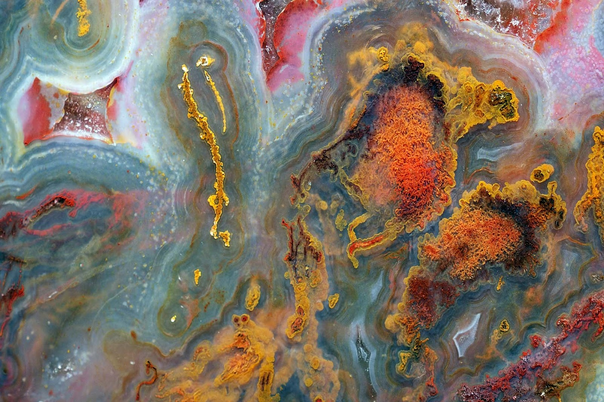

The mineral and gem collection at the Texas Museum of Natural Science consists of approximately 2000 mineral specimens and 100 gems mined in Texas, making it the largest of its kind. Along with the specimens highlighted here, the Lone Star Blue Topaz and other spectacular items from the collection can be seen.


Texas
Minerals
Blue Topaz
Colorless and light-blue topaz can be found in Mason County, in the stretch of Precambrian granite west of the Llano Uplift.
Agate (variety Plume)
Plume agate, moss agate, as well as red and black agate, are available in Brewster County, near the western town of Alpine.
Opal
Texas opal can be found in the Catahoula Formation, a fossilized wood structure that stretches along the eastern Gulf coast of Texas and into Louisiana.
Pearl (Concho River)
Texas is a great source for freshwater pearls, which are found in the Highland Lakes area of central Texas. The Concho River, a tributary of the Colorado River in west Texas, yields the prized pink, purple and lavender Concho pearl.
Jasper (variety Red)
Jasper, a form of chert, is usually red, green, yellow or brown and can be found in the limestone formations in the west central counties of San Saba and McCulloch, as well as in Moore County in the northern panhandle.
Cinnabar
Cinnabar, which is the red ore from which mercury is extracted, is visible in the bluffs of west Texas.